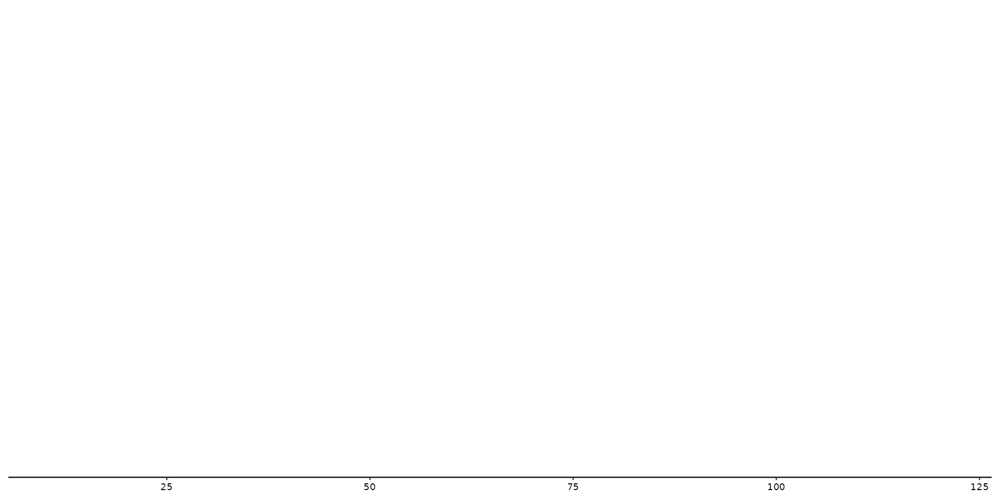
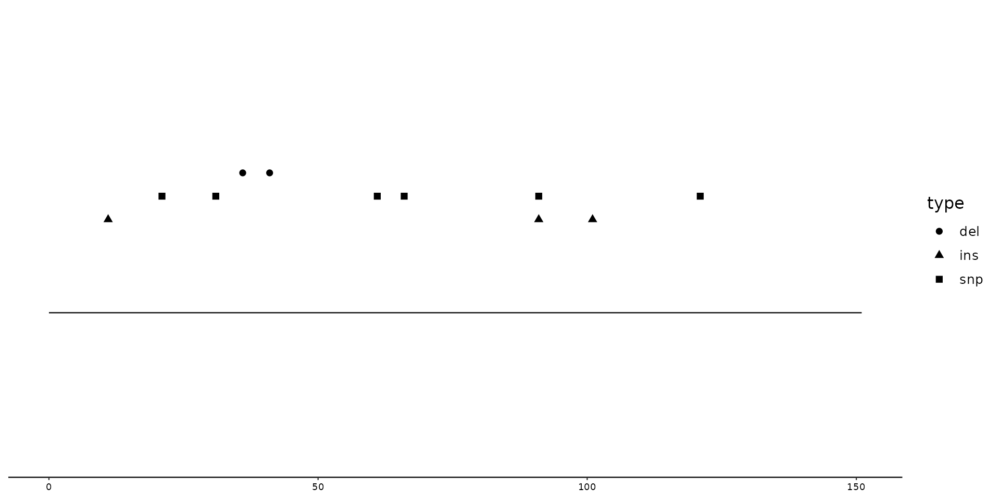
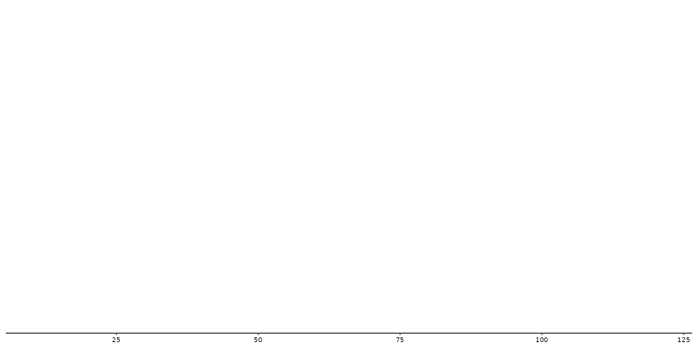
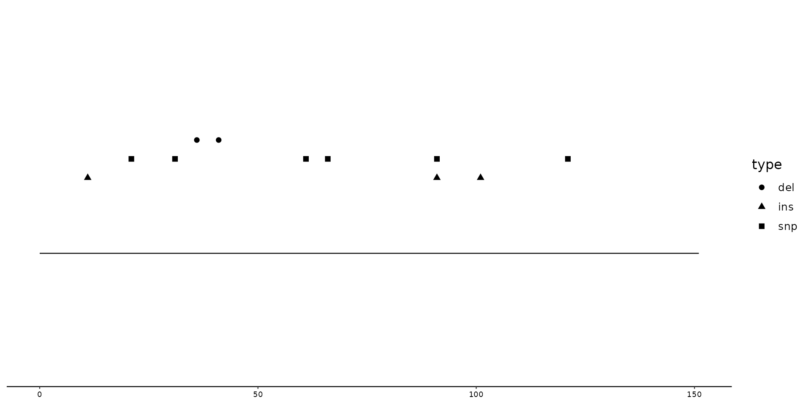

position_variant() allows the user to plot the different mutation types (e.g. del, ins, snps) at different offsets from the base.
This can especially be useful to highlight in which regions certain types of mutations have higher prevalence.
This position adjustment is most relevant for the analysis/visualization of VCF files with the function geom_variant().
position_variant(offset = c(del = 0.1, snp = 0, ins = -0.1), base = 0)Arguments
- offset
Shifts the data up/down based on the type of mutation. By default
offset = c(del=0.1, snp=0, ins=-0.1). The user can supply an own vector tooffsetto indicate at which offsets the different mutation types should be plotted. Types of mutations that have not been specified within the vector, will be plotted with an offset of 0.- base
How to align the offsets relative to the sequence. At base = 0, plotting of the offsets starts from the sequence.
basethus moves the entire feature up/down.
Examples
# Creation of example data.
testposition <- tibble::tibble(
type = c("ins", "snp", "snp", "del", "del", "snp", "snp", "ins", "snp", "ins", "snp"),
start = c(10, 20, 30, 35, 40, 60, 65, 90, 90, 100, 120),
end = start + 1,
seq_id = c(rep("A", 11)))
testseq <- tibble::tibble(
seq_id = "A",
start = 0,
end = 150,
length = end-start)
p <- gggenomes(seqs = testseq, feats = testposition)
#This first plot shows what is being plotted when only geom_variant is called
p + geom_variant()
 #Next lets use position_variant, and change the shape aesthetic by column `type`
p + geom_variant(aes(shape = type), position = position_variant())
#Now lets create a plot with different offsets by inserting a self-created vector.
p + geom_variant(
aes(shape = type),
position = position_variant(c(del=0.4, ins =-0.4))
) + scale_shape_variant()
#> Warning: Some mutation types are not mentioned within the offset argument. These types will have an offset of 0 by default
#> Warning: No shared levels found between `names(values)` of the manual scale and the
#> data's shape values.
#> Warning: No shared levels found between `names(values)` of the manual scale and the
#> data's shape values.
#> Warning: Removed 11 rows containing missing values or values outside the scale range
#> (`geom_variant()`).

#Changing the base will shift all points up/down relatively from the sequence.
p + geom_variant(
aes(shape = type),
position=position_variant(base = 0.5)
) + geom_seq()

#Next lets use position_variant, and change the shape aesthetic by column `type`
p + geom_variant(aes(shape = type), position = position_variant())
#Now lets create a plot with different offsets by inserting a self-created vector.
p + geom_variant(
aes(shape = type),
position = position_variant(c(del=0.4, ins =-0.4))
) + scale_shape_variant()
#> Warning: Some mutation types are not mentioned within the offset argument. These types will have an offset of 0 by default
#> Warning: No shared levels found between `names(values)` of the manual scale and the
#> data's shape values.
#> Warning: No shared levels found between `names(values)` of the manual scale and the
#> data's shape values.
#> Warning: Removed 11 rows containing missing values or values outside the scale range
#> (`geom_variant()`).

#Changing the base will shift all points up/down relatively from the sequence.
p + geom_variant(
aes(shape = type),
position=position_variant(base = 0.5)
) + geom_seq()
